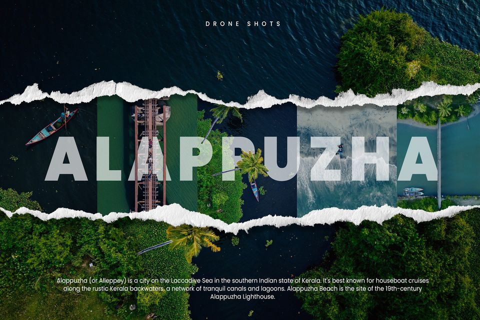
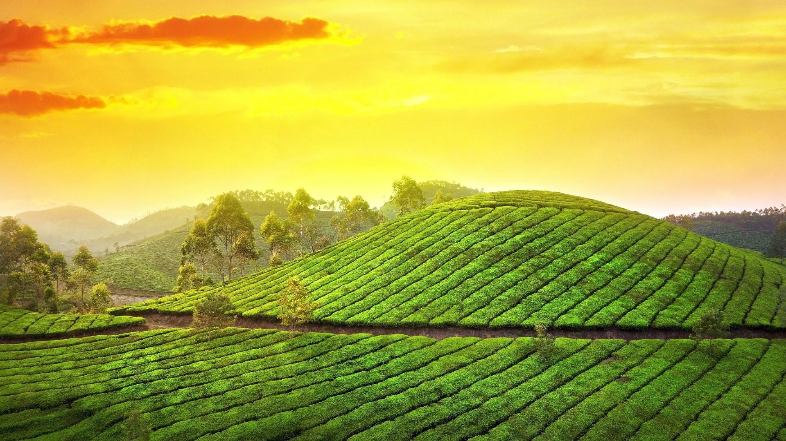

Alappuzha (or Alleppey) is a city on the Laccadive Sea in the southern Indian state of Kerala. It's best known for houseboat cruises along the rustic Kerala backwaters, a network of tranquil canals and lagoons. Alappuzha Beach is the site of the 19th-century Alappuzha Lighthouse. The city's Mullakkal Temple features a traditional design. Punnamada Lake's snake boat races are a well-known annual event.

A combination of houseboat cruises takes you on a trip from Alleppey to Kumarakom backwaters through the well-made channels of canals, natural lakes and lagoons. This scenic route is designed for the travellers who want a holistic experience of travelling in Kerala.The Nehru Trophy Boat Race is an annual vallam kali held in the Punnamada Lake near Alappuzha, Kerala, India. Vallam Kali or Vallamkaliy literally means boat play/game, but can be translated to boat race in English. The most popular event of the race is the competition of Chundan Vallams